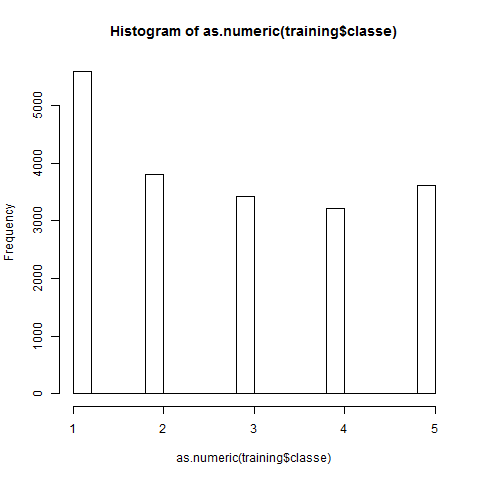
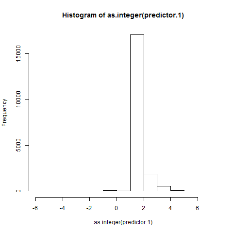
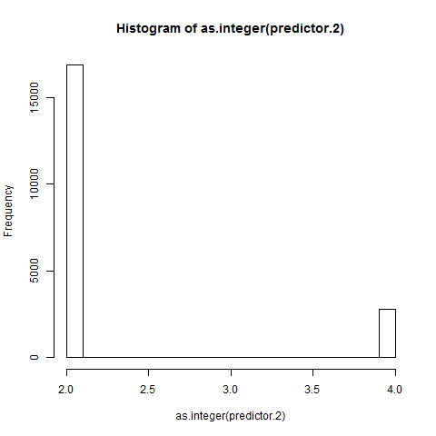

# Course Project - Practical Machine Learning
## Exploratory Analysis
Field names and types are required for predictive analysis.
Below we see the names and data types of the training set.
[1] "X" "user_name" "raw_timestamp_part_1"
[4] "raw_timestamp_part_2" "cvtd_timestamp" "new_window"
[7] "num_window" "roll_belt" "pitch_belt"
[10] "yaw_belt" "total_accel_belt" "kurtosis_roll_belt"
[13] "kurtosis_picth_belt" "kurtosis_yaw_belt" "skewness_roll_belt"
[16] "skewness_roll_belt.1" "skewness_yaw_belt" "max_roll_belt"
[19] "max_picth_belt" "max_yaw_belt" "min_roll_belt"
[22] "min_pitch_belt" "min_yaw_belt" "amplitude_roll_belt"
[25] "amplitude_pitch_belt" "amplitude_yaw_belt" "var_total_accel_belt"
[28] "avg_roll_belt" "stddev_roll_belt" "var_roll_belt"
[31] "avg_pitch_belt" "stddev_pitch_belt" "var_pitch_belt"
[34] "avg_yaw_belt" "stddev_yaw_belt" "var_yaw_belt"
[37] "gyros_belt_x" "gyros_belt_y" "gyros_belt_z"
[40] "accel_belt_x" "accel_belt_y" "accel_belt_z"
[43] "magnet_belt_x" "magnet_belt_y" "magnet_belt_z"
[46] "roll_arm" "pitch_arm" "yaw_arm"
[49] "total_accel_arm" "var_accel_arm" "avg_roll_arm"
[52] "stddev_roll_arm" "var_roll_arm" "avg_pitch_arm"
[55] "stddev_pitch_arm" "var_pitch_arm" "avg_yaw_arm"
[58] "stddev_yaw_arm" "var_yaw_arm" "gyros_arm_x"
[61] "gyros_arm_y" "gyros_arm_z" "accel_arm_x"
[64] "accel_arm_y" "accel_arm_z" "magnet_arm_x"
[67] "magnet_arm_y" "magnet_arm_z" "kurtosis_roll_arm"
[70] "kurtosis_picth_arm" "kurtosis_yaw_arm" "skewness_roll_arm"
[73] "skewness_pitch_arm" "skewness_yaw_arm" "max_roll_arm"
[76] "max_picth_arm" "max_yaw_arm" "min_roll_arm"
[79] "min_pitch_arm" "min_yaw_arm" "amplitude_roll_arm"
[82] "amplitude_pitch_arm" "amplitude_yaw_arm" "roll_dumbbell"
[85] "pitch_dumbbell" "yaw_dumbbell" "kurtosis_roll_dumbbell"
[88] "kurtosis_picth_dumbbell" "kurtosis_yaw_dumbbell" "skewness_roll_dumbbell"
[91] "skewness_pitch_dumbbell" "skewness_yaw_dumbbell" "max_roll_dumbbell"
[94] "max_picth_dumbbell" "max_yaw_dumbbell" "min_roll_dumbbell"
[97] "min_pitch_dumbbell" "min_yaw_dumbbell" "amplitude_roll_dumbbell"
[100] "amplitude_pitch_dumbbell" "amplitude_yaw_dumbbell" "total_accel_dumbbell"
[103] "var_accel_dumbbell" "avg_roll_dumbbell" "stddev_roll_dumbbell"
[106] "var_roll_dumbbell" "avg_pitch_dumbbell" "stddev_pitch_dumbbell"
[109] "var_pitch_dumbbell" "avg_yaw_dumbbell" "stddev_yaw_dumbbell"
[112] "var_yaw_dumbbell" "gyros_dumbbell_x" "gyros_dumbbell_y"
[115] "gyros_dumbbell_z" "accel_dumbbell_x" "accel_dumbbell_y"
[118] "accel_dumbbell_z" "magnet_dumbbell_x" "magnet_dumbbell_y"
[121] "magnet_dumbbell_z" "roll_forearm" "pitch_forearm"
[124] "yaw_forearm" "kurtosis_roll_forearm" "kurtosis_picth_forearm"
[127] "kurtosis_yaw_forearm" "skewness_roll_forearm" "skewness_pitch_forearm"
[130] "skewness_yaw_forearm" "max_roll_forearm" "max_picth_forearm"
[133] "max_yaw_forearm" "min_roll_forearm" "min_pitch_forearm"
[136] "min_yaw_forearm" "amplitude_roll_forearm" "amplitude_pitch_forearm"
[139] "amplitude_yaw_forearm" "total_accel_forearm" "var_accel_forearm"
[142] "avg_roll_forearm" "stddev_roll_forearm" "var_roll_forearm"
[145] "avg_pitch_forearm" "stddev_pitch_forearm" "var_pitch_forearm"
[148] "avg_yaw_forearm" "stddev_yaw_forearm" "var_yaw_forearm"
[151] "gyros_forearm_x" "gyros_forearm_y" "gyros_forearm_z"
[154] "accel_forearm_x" "accel_forearm_y" "accel_forearm_z"
[157] "magnet_forearm_x" "magnet_forearm_y" "magnet_forearm_z"
[160] "classe"
## Formula Fitting
Based on the information given the selected formula for this analysis
was selected to be an independent combination of the recorded belt
acceleration dimentions.
This data was first fit by a linear model. The following distributions
compare the prediction with the recorded data.


A second fit was attempted with a resampling of the training set.
Below is a distribution of the resulting prediction.

## Predictions
Although the choice may be more subjective then obvious, the second
fit seems to give a mildly closer approximation. It was selected as
the predictive model to apply to the testing set. The result are below,
[1] 2 2 2 2 2 4 2 2 2 2 2 2 2 2 2 2 2 2 2 2